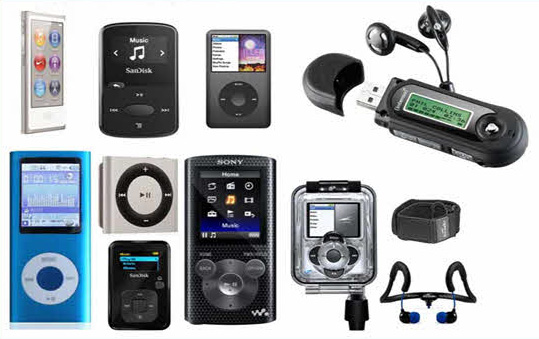
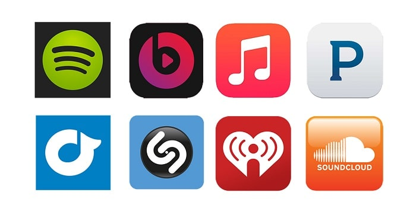
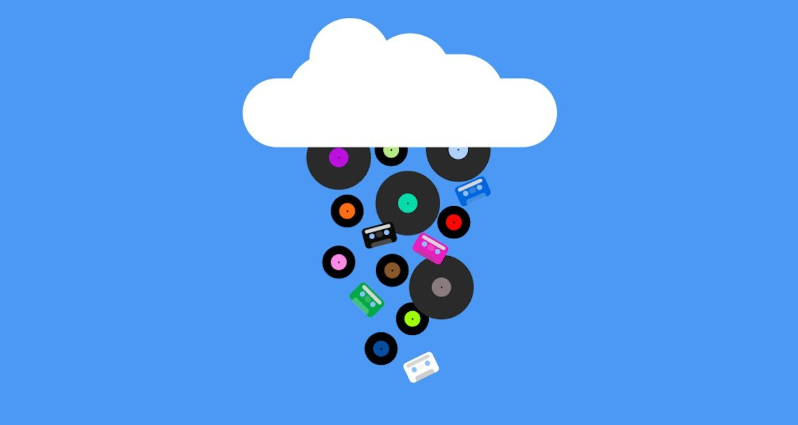
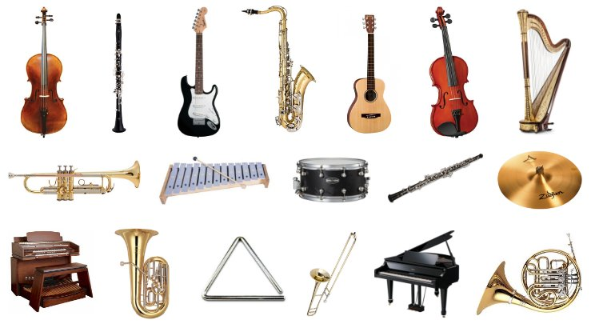

About
In general, getting distracted by the use of technology is easy and can add to the never ending cycle of procrastination. One example that is not so obvious is music. It definitely depends on the person and the type of music, but it can still cause people to postpone their work if they are jamming out to their favorite songs.
I will be using The Stack model to illustrate the different layers of music.
User
In the User layer, the person who is listening to the music while doing their work is the user.

Interface
The tool that the User is using to listen to music is the Interface. This can include mp3 players, ipods, phones, ipads, computers, and other less technical items like a cd player, cassette player, and record player.
Address
Focusing more on the digital age, the music apps based through the internet are considered to be the Address in which music content is gathered and streamed. For example, Spotify, Apple Music, Pandora, SoundCloud, etc.
City
The City level is the internet which connects users to music media around the world. It can also connect content creators, musicians, and consumers/listeners to each other to share and enjoy music.
Cloud
The Cloud is the huge databases of each music app that collects all of this music data. It stores the information for people so they can stream the music over the internet.
Earth
The Earth is the ground level where music is made. Taking it back, it can include the various of instruments that create music, but it can also include the musicians who write the songs we listen to.
